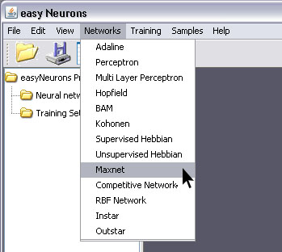
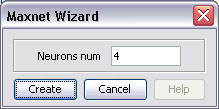
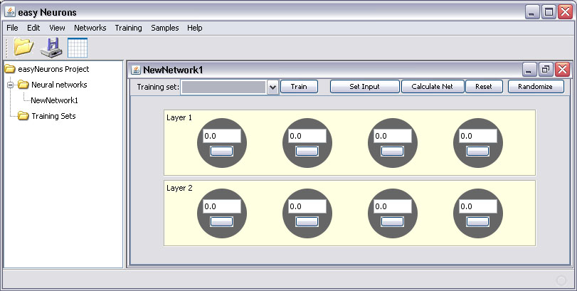
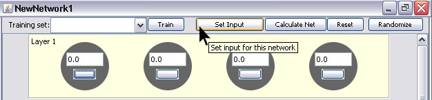
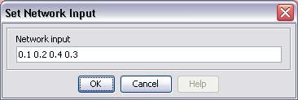
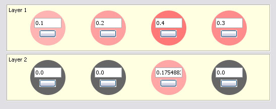

Maxnet is an implementation of a maximum-finding function. With each iteration, the neurons’ activations will decrease until only one neuron remains active.
This is the “winner” neuron that had the greatest output. [www.cs.umb.edu]
To create and train Maxnet neural network with easyNeurons do the following:
Step 1. To create Maxnet network, in main menu click Networks > Maxnet

Step 2. Enter number of neurons in input layer, and click Create button.

This will create the Maxnet neural network with four neurons in input and four in output layer. By default, neurons in input layer will have Linear, and in output Ramp transfer functions.

For this type of neural network there is no training process.
Step 3. Click Set Input button.

This opens Set Network Input dialog in which you can enter input values for network separated with white space.

The result of network test is shown on picture below. Only the third output neuron is fireing, because the corresponding input neuron has maximum input value.
